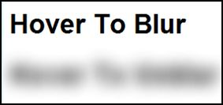

Technical Blog I
Feature Wishlist
-
Text that blurs/focusses slowly on mouseover
I'd like to have text, links especially, that blur slowly or come into focus slowly with the mouseover them. I don't know if this can be done easily, I did see static blurred text through use of
text-shadow. I guess transitions can be done with javascript later. Apparently there are new ways to do this with only CSS but using shadow as in the link is a trick that has wider (older) support. -
A fixed header.. Tick!
This took way more fiddling than I expected but I got it going with some compromise.
-
Text that types itself on the page
Here's another thing that relies on animation. I like it a lot. It can be done using just css, although maybe this css animation feature, like some of the methods for blurring text, relies on features that aren't widely supported yet.
-
Flexboxes.
How to have side by side elements that display nicely without a lot of tinkering appears tricky at the moment. HTML seems to lend itself more to vertical ordering than horizontal so I'd like to get familiar with this tool and put it somewhere on this site.
-
Something I can't put my finger on..
These websites from the Zen garden show something which I want to capture in my website. It's got something to do with a de-emphasis of the rectangular borders around elements through features/images that float in the white space or fade into it.
- The Bonsai tree against white here.
- The header on this page.
- The combination of image against white and fading scroll here.
What are HTML, CSS, the DOM and how do they fit together?
Imagine you have an empty room and you want to fill it with furniture and things. But for some reason you have to write instructions and get someone else to do it for you. Maybe you're on the phone talking to a friend who is helping you move while you're away somewhere.
HTML
HTML is like a list of things that are going to be in the room, you might say 'chair' or 'table' or 'lightbulb'. HTML also says whether objects are inside one another or just out in the room alone. For instance, you might have a <book> inside your <shelf>
CSS
CSS contains information about each object's size, colour, location (apart from being inside or part of other items), style. Everything else that decides exactly what each thing is going to look like and where it fits in.
the DOM
the DOM is what happens when your friend follows your two sets of instructions and fills your room with
stuff according to your plan. It's a complete model of how you want your room to look like that you can
interact with. Different friends might make different guesses if you leave some information out, in the same way the DOM produced
isn't an exact copy of your code, it get's interpreted by the browser.
That's a bit of a stretched analogy in some ways; the DOM isn't the final website or room you see, it's an intermediary that get's
built out of your specifications/code and which is the source of the final display.
What is meant by boxifying design?
Every object in HTML gets interpreted and displayed as a rectangle, so in order to make a non-rectangular design into a website it needs to be translated (boxified) into the language of rectangles. I enjoyed the Udacity video that showed an example of taking a design on a piece of paper and going through the task of splitting all the content into boxes, this effectively prepares the design to be converted to HTML.
What is the box model?
Each HTML element box has:
Contents
Padding (space between contents and border)
Border
Margin (space between border and other elements)
These parts are all rectangular and sit inside one another. This is the box model. By setting the width, behaviour and colour of all these parts there is a great deal of control over where each box sits and the space it has around it.